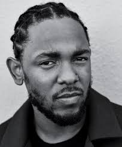
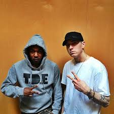
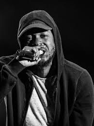

En 2024, la disputa alcanzó un nuevo nivel cuando ambos comenzaron a lanzar temas con ataques personales directos. Drake avivó la controversia con Family
Matters, donde insinuó que el representante de Lamar había tenido un hijo con la pareja del rapero estadounidense y que este intentó ocultarlo con un pago. |
|
Cabe destacar que la tensión entre Kendrick Lamar y Drake no es nueva, pues su historia se remonta a 2011, cuando colaboraron en el álbum Take Care de Drake,
un disco que marcó un punto clave en la carrera de ambos. Sin embargo, la relación entre los raperos se fracturó en 2013, cuando Lamar lanzó el tema Control junto
a Big Sean, en el que desafió a varios artistas, incluido Drake. |
|
El conflicto alcanzó su punto más álgido con el lanzamiento de “Not Like Us”, un tema que se convirtió en un fenómeno mundial y en el mayor éxito de
Kendrick Lamar en los últimos años. En la canción, Lamar lanza acusaciones veladas y directas contra del canadiense, sugiriendo en una de las líneas:
“A ver, Drake, oí que te gustan jóvenes”, y luego refiriéndose a él y a su equipo como “pedófilos certificados” |
 |
En la canción "m.A.A.d city", Kendrick relata experiencias de su vida en Compton, incluyendo la violencia y las drogas. |
|
La línea "If Pirus and Crips, all got along / They'd probably gun me down by the end of the song"
fue vista por algunos como una representación problemática de las pandillas, lo que generó debate sobre si estaba
glorificando la violencia o simplemente contando su historia. |
|  |
En su álbum To Pimp a Butterfly, Kendrick Lamar incluyó la canción "The Blacker the Berry", en la que aborda temas como el racismo
y la brutalidad policial. Aunque la canción fue muy aclamada por su mensaje, también generó controversia debido a una línea en la que dice: "I'm the
biggest hypocrite of 2015". |
 |
| Disputa con otros artistas: Aunque no es conocido por generar muchas disputas públicas, Kendrick tuvo una confrontación con el
rapero Drake en 2013 cuando lanzó su verso en "Control" (de Big Sean), donde hizo referencias directas a ser el mejor del juego y desafiaba a varios
raperos, incluyendo a Drake, lo que alimentó rumores de rivalidad. |
|
Más tarde, admitió en una entrevista que el suceso "me provocó algo en ese momento. Me hizo pensar que no era algo que solo estaba viendo,
sino que era algo que quizás debía estar acostumbrándome a ver". Tres años después, presenció su segundo asesinato cuando estaba volviendo
a su casa de la escuela. |
|
En la ceremonia de los Premios Grammy de 2016, Kendrick Lamar fue nominado a varias categorías, incluyendo Álbum del Año,
pero no ganó en ninguna de esas. En lugar de eso, Taylor Swift se llevó el galardón, lo que generó controversia. |
|
| El video musical de la canción "HUMBLE." generó controversia debido a varias imágenes y simbolismos que algunos
consideraron problemáticos o de mal gusto. |
 |
En una de las escenas, Kendrick aparece vestido con una prenda religiosa que causó disgusto entre algunos grupos
religiosos, que lo consideraron irreverente. |
 |
En la canción "The Heart Part 4", Kendrick Lamar hizo una referencia indirecta a su rivalidad con Drake, un tema
que había sido objeto de especulación durante años. En una de las líneas, Kendrick dice: "Y’all got ’til April 7th to get your sh*t together,"
lo que muchos interpretaron como una amenaza o un desafío dirigido a Drake. La referencia no solo generó especulación sobre la relación entre
ambos, sino que también alimentó el debate sobre si Lamar estaba tratando de provocar a Drake o si estaba usando la canción como una forma de
llamar la atención en la industria. |
|
| En la canción "Control" de Big Sean, Kendrick Lamar lanzó una de las barras más polémicas de su carrera, donde desafiaba
a varios raperos de la industria diciendo que él era el "rey" y se presentaba como el mejor del rap en ese momento |
|
Esto provocó una ola de reacciones de otros raperos, como Drake, J. Cole y varios más,
que respondieron con sus propias canciones, creando una especie de "guerra de raperos" no oficial.
|
|
Estas son solo algunas de las situaciones que han generado debate en torno a Kendrick Lamar. Sin embargo, su habilidad
para abordar temas complejos y sus contribuciones al hip-hop continúan siendo altamente respetadas, a pesar de las controversias. |
|